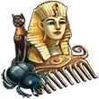
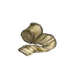
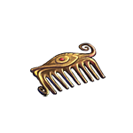
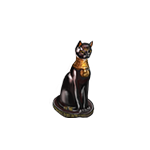
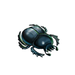
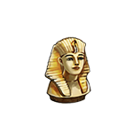

Получено: файл; исходный URL. Иллюстрация в отдельной статье ViveR_9 «Луксорская коллекция»; исходный файл без перекодирования. Авторство отдельно не установлено. Страница: источник.

Луксорская коллекция
Браузерная социальная версия; историческая статья; дата редакции неизвестна- Тип
- Коллекции
- Версия и дата
- Браузерная социальная версия; историческая статья; дата редакции неизвестна
Элементы коллекции
















Данные по источнику · Браузерная социальная версия · историческая статья; дата редакции неизвестна
Предварительно: один материал, требуется сверка. Требуется сверка.
- Состав (источник Zombie-island)
- Бинты мумии; Гребешок; Кошечка; Скарабей; Фараон.
- Награда (источник Zombie-island)
- 1 Зеленый мрамор; 200 Опыт.
- Где копать Луксорскую коллекцию в Зомби Ферме лопатами
- Пирамида; Лестница в небо; Мельница; Марафонец; Флаг Марафонца; Флаг БАТЭ; Флаг Зенита; Флаг ЦСКА; Флаг Спартака; Любимый забор; Тедди-лав; Левая половина; Бархатное сердце; Весенняя ваза 3; Весенняя ваза 2; Весенняя ваза 1.
- Луксор можно выиграть в рулетке Яблочного автомата
- Яблочный автомат.
- Элементы Луксорской создаются в Изумрудном маяке
- Изумрудный маяк.
- Луксорскую можно найти в Секретном кладе, ценностях и сокровищах игры
- Секретный клад; Коллекционная посылка; Коллекционный; Коллекционер; Ледяной дворец; Новогодняя елка за дубл; Новогодняя елка за зб; Сундук Яблони; Сундук Чудовища.
- Луксорская коллекция попадается при колдовании Палочками
- Палочка-выручалочка.
Данные по источнику · браузерная версия; платформа в ответе не уточнена · Дата на странице (формат не уточнён): 25/02/2015
Предварительно: Ответ справочного сайта; достоверность и независимость от других фанатских источников не установлены. Возможны различия редакций и версии.. Требуется сверка.
- Ответ источника
- Луксорская коллекция в Зомби ферме состоит из таких элементов: Фараон, кошечка, гребешок, жук Скарабей и бинты от мумии. Копать эту коллекцию следует под пирамидой, мельницей, лестницей в небо, любимым забором, тедди-лав, бархатным сердцем и левой половинкой сердца. Также части Луксорской коллекции лежат под флагами ЦСКА, Зенита, БАТЭ, Спартака и Марафонца. Иногда коллекция выпадет из секретных сундуков Яблони и Чудовища. Некоторые элементы вы можете создать в Изумрудном маяке. Собрав все составляющие, можете обменять все на 200 единиц опыта + зеленый мрамор.
Данные по источнику · браузерная версия; платформа не указана · дата редакции не установлена
Предварительно: Содержимое списка: изображения и колонки могут терять смысл при извлечении текста; отдельная страница и дата не проверены. Подписи alt иногда ошибочны.. Требуется сверка.
- Текст карточки из каталога
- Мрамор и 200 опыта Бинты мумии Гребешок Кошечка Скарабей Фараон Где лучше всего копается Луксорская коллекция: Пирамида, Маяк, Мельница, Флаг Спартака, Флаг Зенита, Флаг ЦСКА, Флаг БАТЭ, бархатное сердце, заборы с сердечками, ужасная мельница, Склеп-призрак, изумрудная мельница, мельница-призрак
Данные по источнику · Мой Мир (Mail.ru); историческая таблица · дата редакции не установлена
Предварительно: Источник сам использует знаки вопроса; не следует считать такие места подтверждёнными. Возможны изменения патча и платформы; независимость от других справочников не доказана.. Требуется сверка.
- Название в источнике
- Люксорская коллекция
- Где копать
- Пирамида, Маяк, Мельница
- Награда
- Мрамор и 200 опыта
Данные по источнику · браузерная версия; на сайте указана игра ВКонтакте · дата редакции не установлена
Предварительно: Исторический текст; сильно совпадает со справкой Zommbie.at.ua, независимость не доказана. Отрицания и доступность могут измениться с патчем.. Требуется сверка.
- Где искать по странице «Зомбастики»
- Пирамида, мельница, флаг БАТЭ, флаг ЦСКА.
Данные по источнику · историческая браузерная социальная версия ВКонтакте; редакция неизвестна · дата публикации и последующей редакции не проверена
Предварительно: Фанатский источник; актуальность, вероятности и независимость от других справочников не установлены.. Требуется сверка.
- Состав
- Бинты мумии, Гребешок, Кошечка, Скарабей, Фараон.
- Обмен
- 1 Мрамор и 200 опыта.
- Получение
- Создание в Изумрудном Маяке (рецепт не указан); рулетки Палатки горожан, Саркофага Технария и Яблочного автомата; среди ценностей Драгоценный цветок, Пятнистое, Ящик из-под яблони, Коллекционная посылка.
- Палочки
- Мох, Октавий, Пончик отважный и несколько подземных ресурсов без конкретных названий.
- Лопаты у друзей
- Флаги БАТЭ, ЦСКА, Марафонца, Спартака и Зенита, Мельница, Пирамида, Лестница в небо, Мастер урожая, Марафонец, Весенняя ваза, Тедди-лав, Любимый забор, Бархатное сердце, Левая половина, Секретный клад.
- Применение
- Указаны задания, в том числе «Коллекционер» и «День Музеев»; количество не приведено.
Данные по источнику · историческая браузерная версия, платформа не указана · 10.01.2014 — дата в каталоге; дата редакции материала неизвестна
Предварительно: Фанатский список без вероятностей и уточнения площадки; независимость от других источников не установлена.. Требуется сверка.
- Где искать по списку сайта
- Пирамида, мельница, флаг БАТЭ, флаг ЦСКА
- Оговорка
- Список может относиться к разным условиям, инструментам и периодам игры; не доказывает гарантированное выпадение. Заявления «только» и «невозможно» относятся лишь к времени и версии источника.
Данные по источнику · историческая браузерная игра; площадка не уточнена · 26.02.2013 — дата каталога; редакция неизвестна
Предварительно: Проверен текст в каталоге сайта; вероятность выпадения не указана. Исторические версии и даты могут различаться; списки и награды требуют сверки, независимость сайта от других справочников не установлена.. Требуется сверка.
- Награда в источнике
- Мрамор и 200 опыта
- Места в источнике
- Пирамида, маяк, мельница, флаги Спартака, Зенита, ЦСКА, БАТЭ, бархатное сердце, заборы с сердечками. Даты адреса и каталога различаются.
Связанные сущности
нет проверенных связей — требуется сверка.
Источники
- прочитано: Zombie-island.moy.su; проверка 2026-11-21
- FatalGame: прочитан отдельный ответ; дата на странице 25/02/2015
- ZOMBIA: прочитана карточка в списке
- Ссылка на отдельную страницу; отдельно не проверена
- Zombiemail: строка таблицы коллекций; Мой Мир
- Зомбастики: прочитана соответствующая строка; возможная копия другого справочника
- ViveR_9: прочитанная отдельная статья
- zommbie.at.ua: где искать коллекции
- zombi-ferma.ucoz.net: каталог коллекций